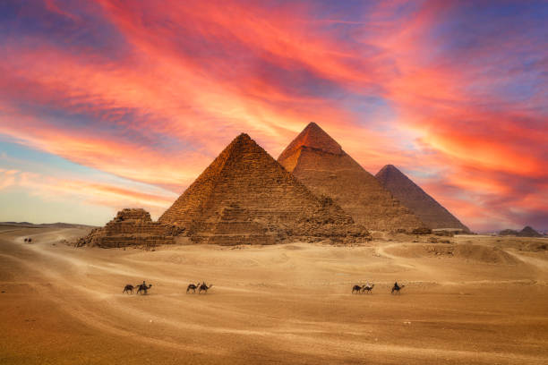
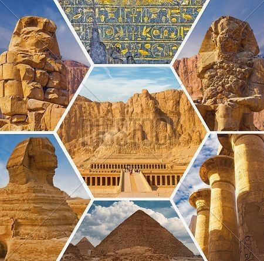

Giza Pyramids
About Giza Pyramid
The Great Pyramid of Giza is the largest Egyptian pyramid and served as the tomb of pharaoh Khufu, who ruled during the Fourth Dynasty of the Old Kingdom. Built in the early 26th century BC, over a period of about 27 years, the pyramid is the oldest of the Seven Wonders of the Ancient World, and the only wonder that has remained largely intact. It is the most famous monument of the Giza pyramid complex, which is part of the UNESCO World Heritage Site "Memphis and its Necropolis". It is situated at the northern end of the line of the three pyramids at Giza.
| Ancient name: | Khufu's Horizon |
| Architect: | Hemiunu (presumed) |
| Constructed: | 2570 BC (Old Kingdom); 4594 years ago |
| Type: | True pyramid |
| Material: | Limestone, mortar, granite |
| Height: | Original: 146.6 m (481 ft) or 280 cubits Current: 138.5 m (454 ft) |
| Base: | 230.33 m (756 ft) or 440 cubits |
| Volume: | 2.6 million m3 (92 million cu ft) |
| Slope: | 51°50'40" |
| Inscription: | 1979 |
| Area: | Arab states |
Cross sectional view of the pyramid

The Original Entrance
The true entrance to the great pyramid was bypassed by Al Mamun in 820 AD. The original entrance into the pyramid was through the now missing door at the top of the Descending corridor, a feature common to other early dynastly pyramids. The door was described by Strabo around 24 BC, who said that it swivelled open.
The Granite 'Plugs'
The three granite 'plugs' which sit in the bottom of the ascending passage are believed to have been built 'in-situ' by some sources and 'slid' into place by others.
The Descending Passage
The testimony by Strabo of a swivel door combined with the hidden upper parts suggests that the only part of the internal structure which were intended to be seen was the descending passage and the subterranean chamber.
The 'Subterranean' chamber
The first noticeable thing about the subterranean passage is that it has the appearance of being unfinished. The southern passage was in the process of being carefully cut, and adds to the idea that work was stopped in the middle of the chamber.
The Ascending corridor
The bottom of the Ascending corridor was determined to have been cut through pre-existing masonry. This has been suggested to be evidence of a possible change in design (from the upper level where the stones were prepared).
The 'Girdle stones'
Stones in the Ascending corridor are baffling.
The 'Queen's' Chamber
The 'Queens' chamber is only called so because of its shape which Arab tradition ascribes to female burials. It sits at the heart of the pyramid.
The Kings chamber
Only called the 'King's Chamber' because Arabs buried their kings in flat-roofed chambers and Queens in corbelled chambers.
The Grand Gallery
One of the great mysteries about the Great Pyramid remained the apparently incomprehensible design of the Grand Gallery, a seven levelled, elaborate corbelled vault forming the upper half of the Ascending Passage leading to the King's Chamber.